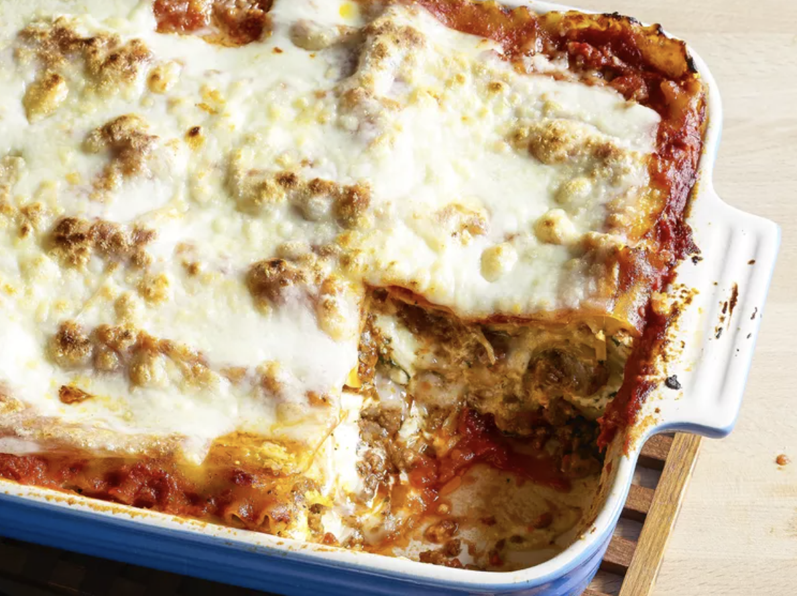

Home
Lasagna Recipe

Description
This classic lasagna recipe is a family favorite, featuring layers of rich meat sauce, creamy ricotta, and melted mozzarella cheese.
Prep Time: 30 minutes | Cook Time: 1 hour | Servings: 8
Ingredients
- 9 lasagna noodles
- 2 tablespoons olive oil
- 1 pound ground beef
- 1 onion, chopped
- 2 cloves garlic, minced
- 1 can (28 ounces) crushed tomatoes
- 2 cans (6 ounces each) tomato paste
- 2 teaspoons dried basil
- 1 teaspoon salt
- 1/2 teaspoon black pepper
- 15 ounces ricotta cheese
- 1 egg
- 3 cups shredded mozzarella cheese
- 1 cup grated Parmesan cheese
Instructions
- Preheat your oven to 375°F (190°C).
- In a large pot, cook the lasagna noodles according to package instructions; drain and set aside.
- In a skillet, heat olive oil over medium heat. Add ground beef, onion, and garlic; cook until meat is browned.
- Stir in crushed tomatoes, tomato paste, basil, salt, and pepper. Simmer for 30 minutes.
- In a bowl, combine ricotta cheese, egg, and half of the mozzarella cheese.
- Spread a layer of meat sauce in the bottom of a baking dish. Layer with noodles, ricotta mixture, and mozzarella. Repeat layers, ending with meat sauce and remaining mozzarella.
- Sprinkle Parmesan cheese on top.
- Cover with foil and bake for 25 minutes. Remove foil and bake for an additional 25 minutes.
- Let it cool for 15 minutes before serving.